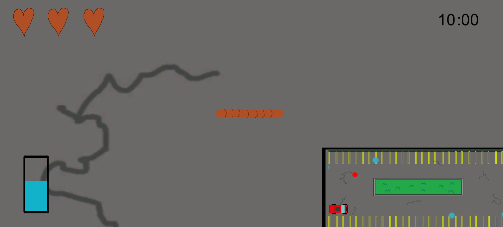

A Rainy Day

- This was made as a final project for my MI 231 class.
- The player plays as a worm in a parking lot that must soak up water while avoiding obstacles such as cars and birds.
- I worked on the design, programming, and art for this game, it being a solo project. This includes:
- Coding the movement for cars and bird.
- Coding the player controls/worm movement.
- Creating the health and damage system.
- Creating the worm's water-soaking ability.
- Designing/implementing the conditions for the 4 versions of the main level.
- Creating the art assets.